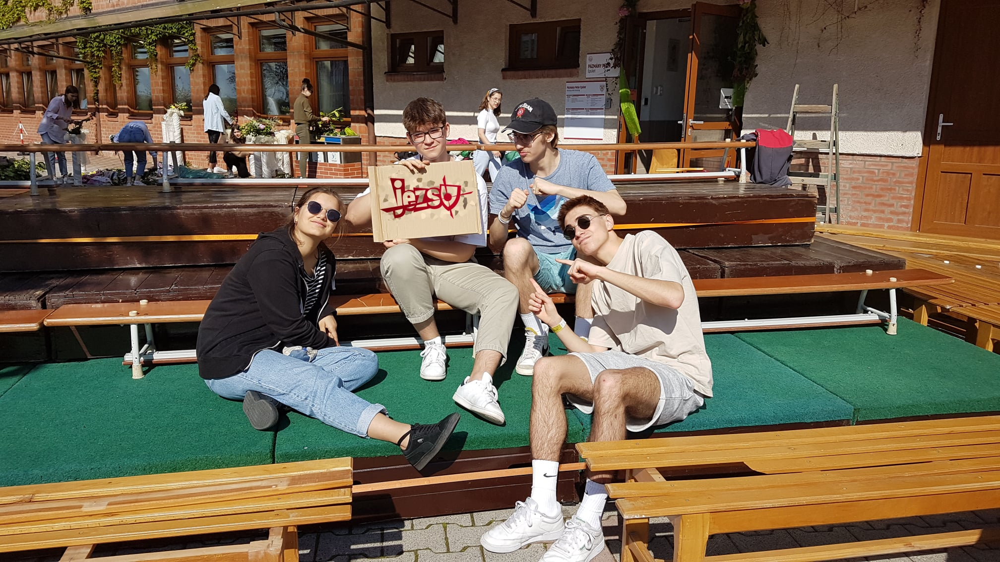

Fényi Gyula Jezsuita Gimnázium, Kollégium és Óvoda

"A másokért élő ember"

Iskola

Személyes törődés

Sport

Összetartozás
Hírek
2022.04.08
Az is rendelkezhet adója 1%-áról aki teljes adóvisszatérítésben
részesült!
Kérjük támogatóinkat, hogy május 20-ig rendelkezzenek adójuk
1%-áról! A felajánlás lehetősége abban az esetben is fennáll, ha Ön
teljes adóvisszatérítésben részesült, ugyanis az 1%+1% állami
támogatás formájában megilleti a civil szervezeteket és az
egyházakat. Köszönjük, hogy adója 1%-ának felajánlásával Ön is
támogatja a minőségi jezsuita nevelést és oktatást! Adószám:
18436501-1-05",

2022.04.28
Az igazgató atya üzenete a JEZSU-s szülőkhöz
Tisztelt Szülők! Arra kérem Önöket, hogy ebben a levélben classE
KATTINTVA tekintsék át velem együtt az előttünk álló feladatokat,
kihívásokat és együttműködési területeket. Meggyőződésem, hogy a
pedagógus, a szülő és a diák hármasának szoros együttműködésével
tudjuk jól támogatni a gyerekeket, biztosítani az emberi és szakmai
megújulást, azokat a feltételeket, amelyek érzelmi és fizikai
biztonságot nyújtanak, valamint eredményes tanuláshoz vezetnek...

2022.04.28
Kollégiumi ballagás - bensőséges ünnepléssel köszöntek el a végzős
kollégisták
Otthon, hétvégén két kistesót kell kerülgetned, hogy bejuss a
fürdőszobába, ez hétközben inkább húsz Vagyis a kollégium olyan,
mint a család, csak többen vagyunk. Ezért van külön kolis ballagás
alig két nappal a rendes ballagás előtt, hogy el tudjunk köszönni a
le classősebb testvérektől. classáman és meghatódva, majd 24 lány és
23 fiú végzős kollégista tett tanúságot, hogy bizony nagyon jó volt
kolisnak lenni. Amikor kicsi ötödikesek voltunk, az első
beköltözésünk napján eljöttek a szobánkba a nagyok, és bemutatkoztak
nekünk. Befogadtak magatok közé, és ez nagyon megkönnyített
számunkra minden napot. Ez a hagyomány továbbra is él. A szerda
esténkénti “kolis mise”, ahol az imádságok, a szentségimádás, a
zene, az énekek különösen gyönyörűek, ahol még azok is énekelnek,
akik egyébként inkább csak tátognak. A kolis ballagás a végzősök
számára az utolsó ilyen alkalom. A két végzős szónok nem győzte
sorolni mindazt, amit a kollégiumi apáinktól és anyáinktól, vagyis
nevelőiktől és a takarító néniktől kaptak. Az öregek bölcsességével
bátorították a fiatalabb kollégistákat, hogy hálás szívvel
fogadjanak mindent, még az elbeszélgetéseket és az egyéb nevelői
intézkedéseket is melyek felsorolását rö class, de
visszafojthatatlan derültség követte.

2022.04.29
Köszönet a véradóknak!
Köszönjük a nagylelkű véradóknak, akik részt vettek hagyományos
JEZSU-s véradáson. A végzős osztályok közötti versenyt (ki mozgósít
több véradót) a 12.B és a 12.C osztály holtversenyben megnyerte. Az
előre tervezett 15 főhöz képest 22-en jelentek meg. 11 személy első
véradó volt. A 15 befejezett véradás összesen 45 élet megmentését
jelenti! Hálásak vagyunk a Magyar Vöröskereszt munkatársainak, hogy
évről-évre kivonulnak a JEZSU-ba, és végzős diákjaink életükben
először hazai pályán adhatnak vért.

2022.04.25
Kollégiumi nevelőnőt várunk a JEZSU-ba
Kollégiumi nevelő pedagógusnőt várunk a JEZSU Szent Erzsébet
Leánykollégiumába. A részletes pályázati kiírás classE KATTINTVA
megtekinthető. Hatá classő május 27.